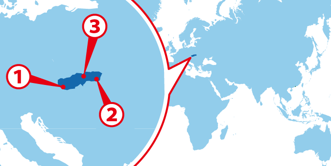
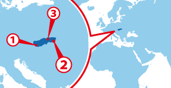

Bratislava
Bratislava Košice
Košice Levoča
Levoča
協定国一覧へ戻る

ワーホリ協定国一覧へ戻る

人気都市 BEST3
基本情報
| 首都 | Bratislava |
|---|---|
| 言語 | Slovak |
| 面積 | 49,036km2²（126位） |
| 人口 | 約5,445,000人（106位） |
| 通貨 | Euro (EUR) |
＊2014 年10 月時点の数値です
| 日本時間 | Bratislava |
|---|---|
 1月1日 09:00am |
 1月1日 02:00am |
＊サマータイムの期間は時差が変動します
| 首都 | Bratislava |
|---|---|
| 面積 | 49,036km2²（126位） |
| 人口 | 約5,445,000人（106位） |
| 言語 | Slovak |
|---|---|
| 通貨 | Euro (EUR) |
＊2014 年10 月時点の数値です |
|
日本との時差
| 日本時間 | Bratislava |
|---|---|
|
1月1日 09:00am |
1月1日 02:00am |
＊サマータイムの期間は時差が変動します
スロバキアってどんな国？
スロバキアはオーストリア、ポーランド、ハンガリーなどと隣接する小さな国で、国土は日本の約7分の1。国土のほとんどが山岳地帯からなっており、北部のタトラ山脈や南部の緩やかな低地地域などが観光地として人気がある。
スロバキアには日本と同じくはっきりとした四季があり、夏は暑く、冬は寒い。内陸部のため気温や天気の変化が激しいので、服装には気を配らなくてはならない。
スロバキアの公用語はスロバキア語。チェコ語と類似している点が多く、チェコ語とスロバキア語で会話が成立してしまうこともある。近年は英語もしっかり通じるようになっているが、しっかり仕事をするためにはスロバキア語の習得が必須となるだろう。
スロバキアの首都はブラチスラバ。非常に落ち着いた街で、「ヨーロッパ圏で最も退屈な街」とも呼ばれる事がある。これは、スロバキアが東欧の中心に位置し、ハンガリー、オーストリア、ポーランドといった東欧主要国に囲まれていることが要因だ。スロバキアには背の高い建物が少なく、街並みや建築物は淡い色合いで小さくかわいらしいものが多い。そのため、東欧を観光している人達には「地味」と受け取られてしまうようだ。また、スロバキアは人口の少ない国だ。首都のブラチスラバでも騒がしくない、ゆったりとした時間が流れているため、どうしても「田舎っぽい」というイメージがついている。
しかし、ブラチスラバ最大の魅力は、その「田舎っぽさ」にある。建物や街並みはオモチャのようにかわいらしく、どこを切り取っても絵になる。街にはスロバキアの国土料理を振る舞うレストランも多く点在し、ゆったりとした雰囲気を堪能しつつ、徒歩で様々な場所へアクセスすることも出来るだろう。また、ブラチスラバとオーストリアの首都 ウィーンは「世界一距離が近い首都」として知られていて、鉄道やバスを使うと１時間ほどで移動することができる。スロバキアは東欧でも物価の安い国なので、普段はブラチスラバに住み、週末はウィーンへ日帰りで遊びに行くことも容易にできるのだ。
▼▼▼まずは無料セミナーへ！ワーキングホリデー＆留学の無料セミナーはこちら！▼▼▼